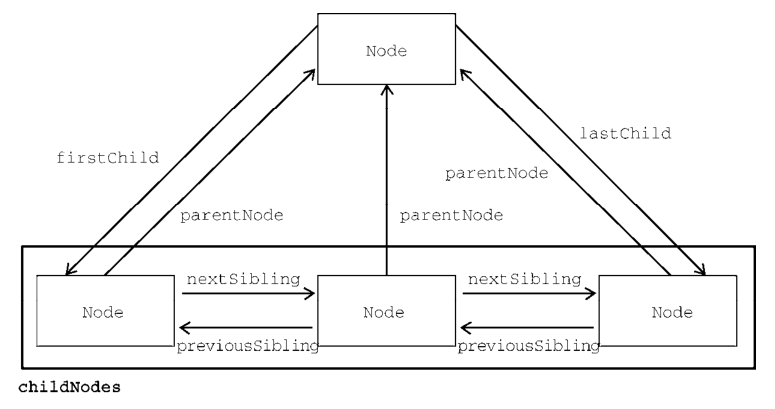

谈谈你知道的DOM常见的操作
参考答案
一、DOM
文档对象模型 (DOM) 是 HTML 和 XML 文档的编程接口
它提供了对文档的结构化的表述，并定义了一种方式可以使从程序中对该结构进行访问，从而改变文档的结构，样式和内容
任何 HTML 或 XML 文档都可以用 DOM 表示为一个由节点构成的层级结构
节点分很多类型，每种类型对应着文档中不同的信息和（或）标记，也都有自己不同的特性、数据和方法，而且与其他类型有某种关系，如下所示：
<html>
<head>
<title>Page</title>
</head>
<body>
<p>Hello World!</p >
</body>
</html>DOM像原子包含着亚原子微粒那样，也有很多类型的DOM节点包含着其他类型的节点。接下来我们先看看其中的三种：
<div>
<p title="title">
content
</p >
</div>上述结构中，div、p就是元素节点，content就是文本节点，title就是属性节点
二、操作
日常前端开发，我们都离不开DOM操作
在以前，我们使用Jquery，zepto等库来操作DOM，之后在vue，Angular，React等框架出现后，我们通过操作数据来控制DOM（绝大多数时候），越来越少的去直接操作DOM
但这并不代表原生操作不重要。相反，DOM操作才能有助于我们理解框架深层的内容
下面就来分析DOM常见的操作，主要分为：
- 创建节点
- 查询节点
- 更新节点
- 添加节点
- 删除节点
创建节点
createElement
创建新元素，接受一个参数，即要创建元素的标签名
const divEl = document.createElement("div");createTextNode
创建一个文本节点
const textEl = document.createTextNode("content");createDocumentFragment
用来创建一个文档碎片，它表示一种轻量级的文档，主要是用来存储临时节点，然后把文档碎片的内容一次性添加到DOM中
const fragment = document.createDocumentFragment();当请求把一个DocumentFragment 节点插入文档树时，插入的不是 DocumentFragment 自身，而是它的所有子孙节点
createAttribute
创建属性节点，可以是自定义属性
const dataAttribute = document.createAttribute('custom');
consle.log(dataAttribute);获取节点
querySelector
传入任何有效的 css 选择器，即可选中单个 DOM 元素（首个）：
document.querySelector('.element')
document.querySelector('#element')
document.querySelector('div')
document.querySelector('[name="username"]')
document.querySelector('div + p > span')如果页面上没有指定的元素时，返回 null
querySelectorAll
返回一个包含节点子树内所有与之相匹配的Element节点列表，如果没有相匹配的，则返回一个空节点列表
const notLive = document.querySelectorAll("p");需要注意的是，该方法返回的是一个 NodeList 的静态实例，它是一个静态的“快照”，而非“实时”的查询
关于获取DOM元素的方法还有如下，就不一一述说
document.getElementById('id属性值');返回拥有指定id的对象的引用
document.getElementsByClassName('class属性值');返回拥有指定class的对象集合
document.getElementsByTagName('标签名');返回拥有指定标签名的对象集合
document.getElementsByName('name属性值'); 返回拥有指定名称的对象结合
document/element.querySelector('CSS选择器'); 仅返回第一个匹配的元素
document/element.querySelectorAll('CSS选择器'); 返回所有匹配的元素
document.documentElement; 获取页面中的HTML标签
document.body; 获取页面中的BODY标签
document.all['']; 获取页面中的所有元素节点的对象集合型除此之外，每个DOM元素还有parentNode、childNodes、firstChild、lastChild、nextSibling、previousSibling属性，关系图如下图所示

更新节点
innerHTML
不但可以修改一个DOM节点的文本内容，还可以直接通过HTML片段修改DOM节点内部的子树
// 获取<p id="p">...</p >
var p = document.getElementById('p');
// 设置文本为abc:
p.innerHTML = 'ABC'; // <p id="p">ABC</p >
// 设置HTML:
p.innerHTML = 'ABC <span style="color:red">RED</span> XYZ';
// <p>...</p >的内部结构已修改innerText、textContent
自动对字符串进行HTML编码，保证无法设置任何HTML标签
// 获取<p id="p-id">...</p >
var p = document.getElementById('p-id');
// 设置文本:
p.innerText = '<script>alert("Hi")</script>';
// HTML被自动编码，无法设置一个<script>节点:
// <p id="p-id"><script>alert("Hi")</script></p >两者的区别在于读取属性时，innerText不返回隐藏元素的文本，而textContent返回所有文本
style
DOM节点的style属性对应所有的CSS，可以直接获取或设置。遇到-需要转化为驼峰命名
// 获取<p id="p-id">...</p >
const p = document.getElementById('p-id');
// 设置CSS:
p.style.color = '#ff0000';
p.style.fontSize = '20px'; // 驼峰命名
p.style.paddingTop = '2em';添加节点
innerHTML
如果这个DOM节点是空的，例如，<div></div>，那么，直接使用innerHTML = '<span>child</span>'就可以修改DOM节点的内容，相当于添加了新的DOM节点
如果这个DOM节点不是空的，那就不能这么做，因为innerHTML会直接替换掉原来的所有子节点
appendChild
把一个子节点添加到父节点的最后一个子节点
举个例子
<!-- HTML结构 -->
<p id="js">JavaScript</p >
<div id="list">
<p id="java">Java</p >
<p id="python">Python</p >
<p id="scheme">Scheme</p >
</div>添加一个p元素
const js = document.getElementById('js')
js.innerHTML = "JavaScript"
const list = document.getElementById('list');
list.appendChild(js);现在HTML结构变成了下面
<!-- HTML结构 -->
<div id="list">
<p id="java">Java</p >
<p id="python">Python</p >
<p id="scheme">Scheme</p >
<p id="js">JavaScript</p > <!-- 添加元素 -->
</div>上述代码中，我们是获取DOM元素后再进行添加操作，这个js节点是已经存在当前文档树中，因此这个节点首先会从原先的位置删除，再插入到新的位置
如果动态添加新的节点，则先创建一个新的节点，然后插入到指定的位置
const list = document.getElementById('list'),
const haskell = document.createElement('p');
haskell.id = 'haskell';
haskell.innerText = 'Haskell';
list.appendChild(haskell);insertBefore
把子节点插入到指定的位置，使用方法如下：
parentElement.insertBefore(newElement, referenceElement)子节点会插入到referenceElement之前
setAttribute
在指定元素中添加一个属性节点，如果元素中已有该属性改变属性值
const div = document.getElementById('id')
div.setAttribute('class', 'white');//第一个参数属性名，第二个参数属性值。删除节点
删除一个节点，首先要获得该节点本身以及它的父节点，然后，调用父节点的removeChild把自己删掉
// 拿到待删除节点:
const self = document.getElementById('to-be-removed');
// 拿到父节点:
const parent = self.parentElement;
// 删除:
const removed = parent.removeChild(self);
removed === self; // true删除后的节点虽然不在文档树中了，但其实它还在内存中，可以随时再次被添加到别的位置